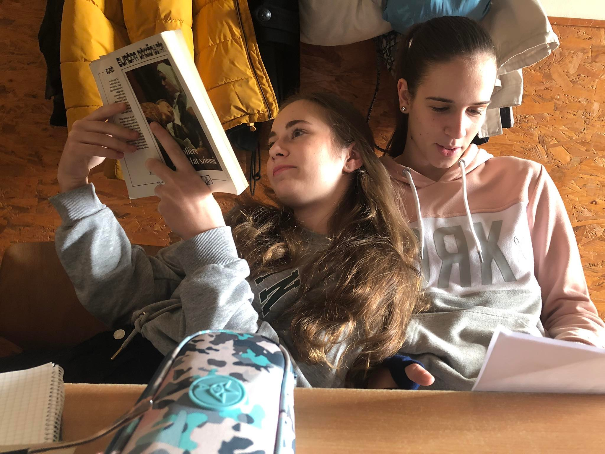

ÜDVÖZLÜNK A KÉT KÉZI SZTÁRUNK HIVATALOS FAN OLDALÁN
BREAKING NEWS: KMSE - HÓDMEZŐVÁSÁRHELY 10:30-TÓL
A CIKK HAMAROSAN ÉRKEZIK

EGY EMBERNEK NAGYON NEHÉZ DOLGA VAN, HOGY ELÉRJE, HOGY SIKERES SPORTOLÓ LEGYEN ÉS KÖZBEN JÓK LEGYENEK A TANULMÁNYAI EREDMÉNYEI, DE KÓCZIÁN LILLÁNAK EZ SIKERÜLT. TALÁN HÍVHATJUK ŐT, HOGY A CSODALÁNY? LILLA VÁLASZOLT A FANOLDALUNK KÉRDÉSÉRE, HOGY ENNEK MI A TITKA.